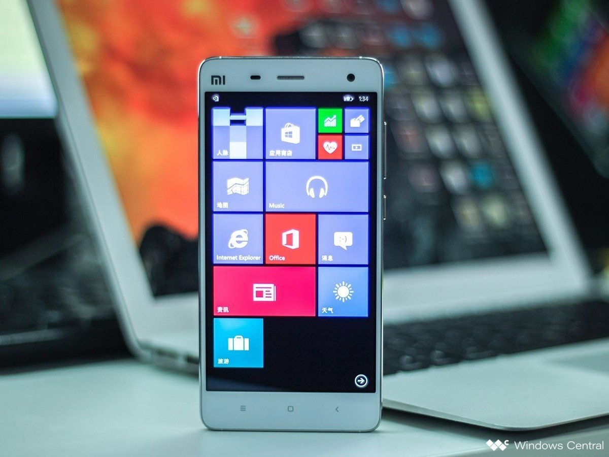
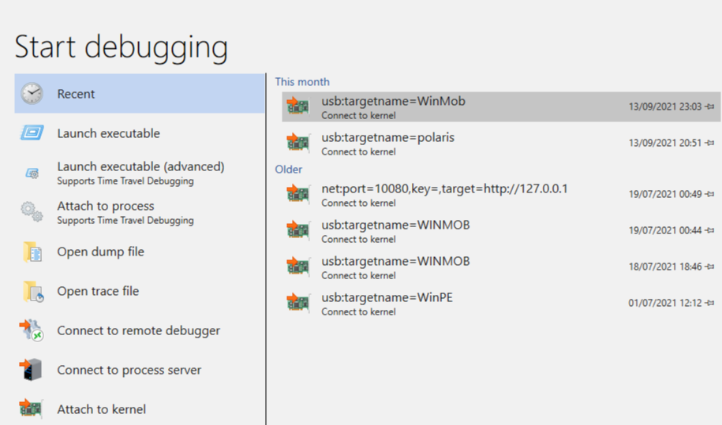
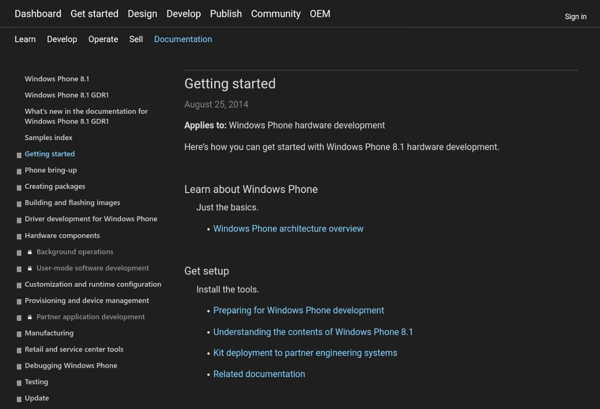
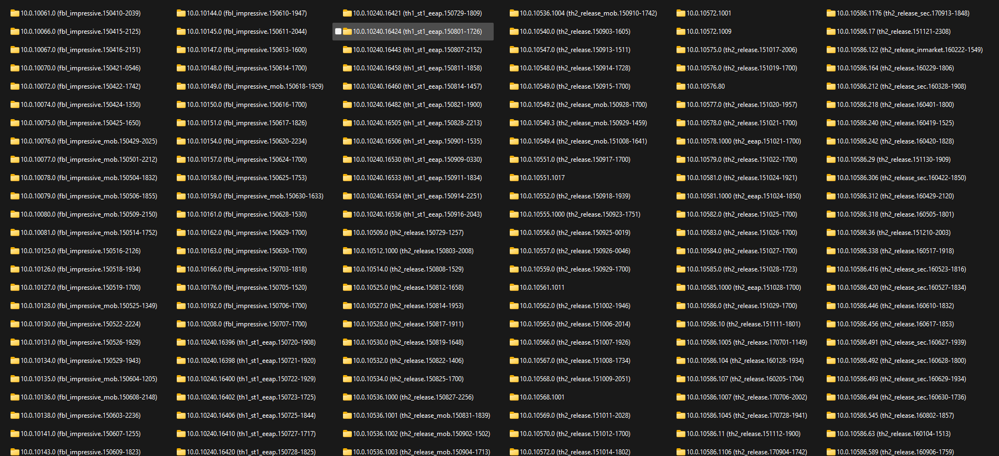

Windows 10 Mobile and Windows Phone 8.x
Various different technical posts regarding Windows Mobile

Xiaomi MI4 W10M Build 10586
Use with caution
This is the Official flash-able image of Windows 10 Mobile for the Xiaomi Mi4 4G/LTE

Manually Enabling Kernel Debugging
See what's going wrong!
Manually enable Kernel Debugging in W10M and connect with WinDbg.

Archived WP8.1 OEM Developer Guides
Learn something
Most documentation has been archived by Archive.org, you can find a link inside.

Windows 10 Mobile WPAKs
Test a few builds!
A small handful of Windows Phone Adaptation Kits for Windows 10 Mobile x86 and ARM32

Windows Phone/Mobile Update Cab Database
Browse through and download a huge collection of builds that is currently on the Windows Update server, for WP8.1 and W10M